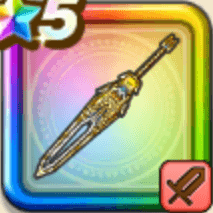

ゴールデンクレイモア
攻略班 8.5点 / まわしげり会心必中のかまえゴールデンブレイクゴールデンクラッシュゴールデンタイムいきなりまもりのたて
くわしい特徴
【レベル別習得スキル】 Lv1【魔剣士】攻撃力+5 Lv1【守り人】守備力+5 Lv10まわしげり（消費MP：8）足で周囲をなぎはらい敵全体に威力110%の体技ダメージを与える Lv15会心必中のかまえ（消費MP：30）次のターンの斬撃・体技ダメージが上がり、会心の一撃になる。さらにガードやみかわしされなくなる Lv20ゴールデンブレイク（消費MP：37）敵1体に威力540%のデイン属性斬撃ダメージを与え、たまに自身のこうげき力を上げる。あるいはごくまれに自身のこうげき力をかなり上げる Lv30ゴールデンクラッシュ（消費MP：55）敵全体に490%のジバリア属性斬撃ダメージ(メタル系に+48)。ごくまれに敵1体の耐性を無視して魅了し、敵を倒す毎にMPが10回復 Lv33鳥系へのダメージ+5% Lv36けもの系へのダメージ+5% Lv40攻撃力+12 Lv43【両】ジバリア属性斬撃・体技ダメージ+3% Lv46【両】スキルの斬撃ダメージ+3% Lv50ゴールデンタイム（消費MP：6）戦闘開始時に黄金の輝きにより、まれに敵全体を1ターンの間耐性を無視して魅了する。メタル系の敵には確率が100%になる Lv50いきなりまもりのたて（消費MP：武器毎に異なる）戦闘開始時に悪い状態変化とすべての状態異常をふせぐ加護が自動で宿る(効果ターンは武器毎に異なる) 【限界突破スキル】 1凸スキルの斬撃・体技ダメージ+7% 2凸スキルの斬撃・体技ダメージ+7% 3凸スキルの斬撃・体技ダメージ+7% 4凸スキルの斬撃・体技ダメージ+7%